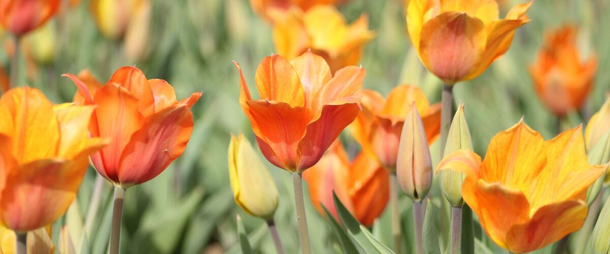

When to plant tulips in Grants Pass, OR
Plant tulip bulbs in Grants Pass from Oct 1 – Nov 15. They root over winter and bloom the next spring.
- Difficulty
- Easy
- Sun
- Full sun
- Spacing
- 4 to 6 inches apart
- Planting depth
- 6 to 8 inches deep, pointed end up
- Frost
- Fully hardy; needs winter cold to bloom
- Flowers
- Blooms in April and May
Why these dates
Tulips need several weeks of winter chill to bloom, so they go in during fall once the soil has cooled, ideally a few weeks before it freezes. In Grants Pass the first fall frost usually comes around October 28.
West-side valleys. The Willamette Valley, Puget Sound and southern Oregon valleys. Long frost-free seasons, but soil stays cold and wet into May, so warm crops wait for warm soil, not just the last frost.
How to grow tulips in Grants Pass
- Buy firm, heavy bulbs from a garden center or bulb grower.
- Pick a sunny spot with soil that drains well; bulbs rot in soggy ground.
- Plant them Oct 1 – Nov 15, 6 to 8 inches deep, pointed end up, 4 to 6 inches apart.
- Water once after planting, then let the rain take over. Leave the leaves until they yellow after blooming.
- Harvest: Cut when buds show color but are still closed. After blooming, let the leaves die back on their own to feed the bulb.
Key numbers
- 12–16 weeks below 48°FWinter cold needed
- October–NovemberPlant
- 6–8 inches (3× bulb)Depth
- About 6 weeksKeep leaves
- Darwin hybrids, speciesReturn best
- Not needed herePre-chill?
How it works
The plant biology behind the advice above, in plain language.
Why tulips need winter
Tulip bulbs need a long cold period, roughly 12 to 16 weeks below about 48°F, before the flower stem will grow properly. Northwest winters provide that naturally, so there's no need to chill bulbs in the fridge. Plant in fall once the soil has cooled, usually October to November, so roots grow before winter.
Depth and drainage
Plant bulbs about three times as deep as they are tall, typically 6 to 8 inches. Deeper planting helps keep bulbs from splitting into small, non-flowering bulbs and makes it harder for squirrels to dig them up. Bulbs rot in soggy soil, so choose a well-drained spot or a raised bed.
Why tulips often don't come back
After blooming, a tulip bulb is used up and is replaced by new daughter bulbs. These are often too small to flower the next year, so blooms dwindle. Many modern hybrids are bred for one strong show. Darwin hybrids and species tulips return much more reliably, especially in a sunny spot with a dry summer and no summer watering, which mimics their native habitat in Central Asia.
Leaves feed next year's bulb
After flowering, leave the leaves until they turn yellow, usually about six weeks. They're making the food that rebuilds the bulb. Snap off spent flower heads so the plant doesn't put energy into seeds. Bulbs come with their own food supply, so they need no fertilizer at planting; for bulbs you want to keep, a light feeding in fall helps.
Tulip fire and pests
Tulip fire is a fungal disease that causes twisted, spotted, scorched-looking leaves and gray mold in cool, wet springs. Dig out and throw away affected plants and bulbs, and don't plant tulips in that spot for at least three years. Squirrels, voles and deer love tulips, so wire cages or planting among daffodils, which animals avoid, can help. Tulips, especially the bulbs, are toxic to cats and dogs.
As cut flowers
Cut tulips when buds show color but are still closed. They keep growing in the vase, often several inches, and bend toward the light, so trim stems and turn the vase as needed.
Common questions
When is the last frost in Grants Pass, OR?
Typically April 8. In 9 years out of 10, frost is over by May 1. These are 1991–2020 NOAA climate normals for Grants Pass.
When do tulips bloom in Grants Pass?
In spring, usually April and May, depending on the variety and the year. Cut when buds show color but are still closed. After blooming, let the leaves die back on their own to feed the bulb.
When do tulips bloom?
Blooms in April and May. Cut when buds show color but are still closed. After blooming, let the leaves die back on their own to feed the bulb.
Will my tulips come back next year?
Many modern hybrids bloom well only once, because the bulbs split into smaller ones that don't flower. Darwin hybrids and species tulips return much better, especially in sunny, well-drained spots that stay dry in summer.
When can I cut back tulip leaves?
Once they turn yellow, usually about six weeks after flowering. The leaves are making the food the bulb needs for next year.
Do I need to chill tulip bulbs before planting?
Not in the Northwest. Winters here provide the 12 to 16 weeks of cold tulips need. Pre-chilling is only needed in mild-winter climates like Southern California.
Also plant in Grants Pass around the same time
Planting dates for tulips in nearby areas
- Roseburg, OR Oct 1 – Nov 15
- Medford, OR Oct 1 – Nov 15
- Ashland and Talent, OR Oct 1 – Nov 15
- Portland, OR Oct 1 – Nov 15
- Gresham, OR Oct 1 – Nov 15
- Wilsonville and Canby, OR Oct 1 – Nov 15
Full planting calendar for Grants Pass · Tulips in every city